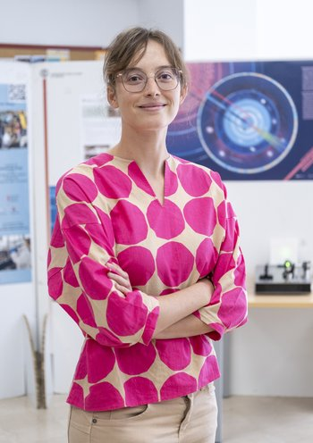

Sophie Bini
Hi, I’m a postdoctoral researcher at the California Institute of Technology.
My research focuses on detecting gravitational waves and measuring the properties of merging black holes, particularly for challenging gravitational-wave events affected by overlapping transient noise and waveform model systematics.
Since 2020, I’ve been part of the LIGO-Virgo-KAGRA Collaboration.
Contacts
Email: bini@caltech.edu
ORCID: 0000-0002-0267-3562
GitHub: github.com/sophiebini
